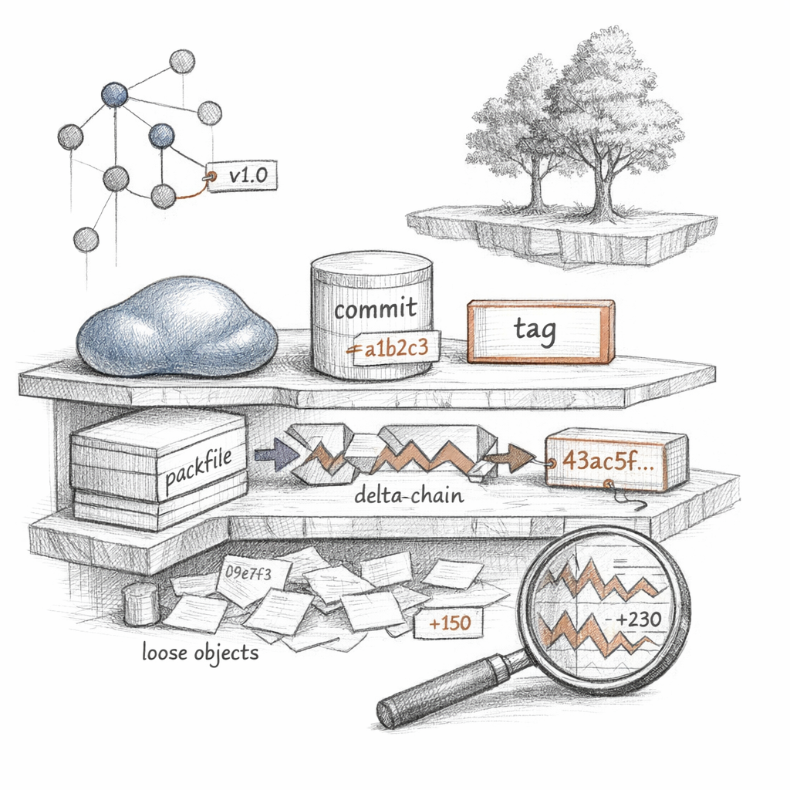
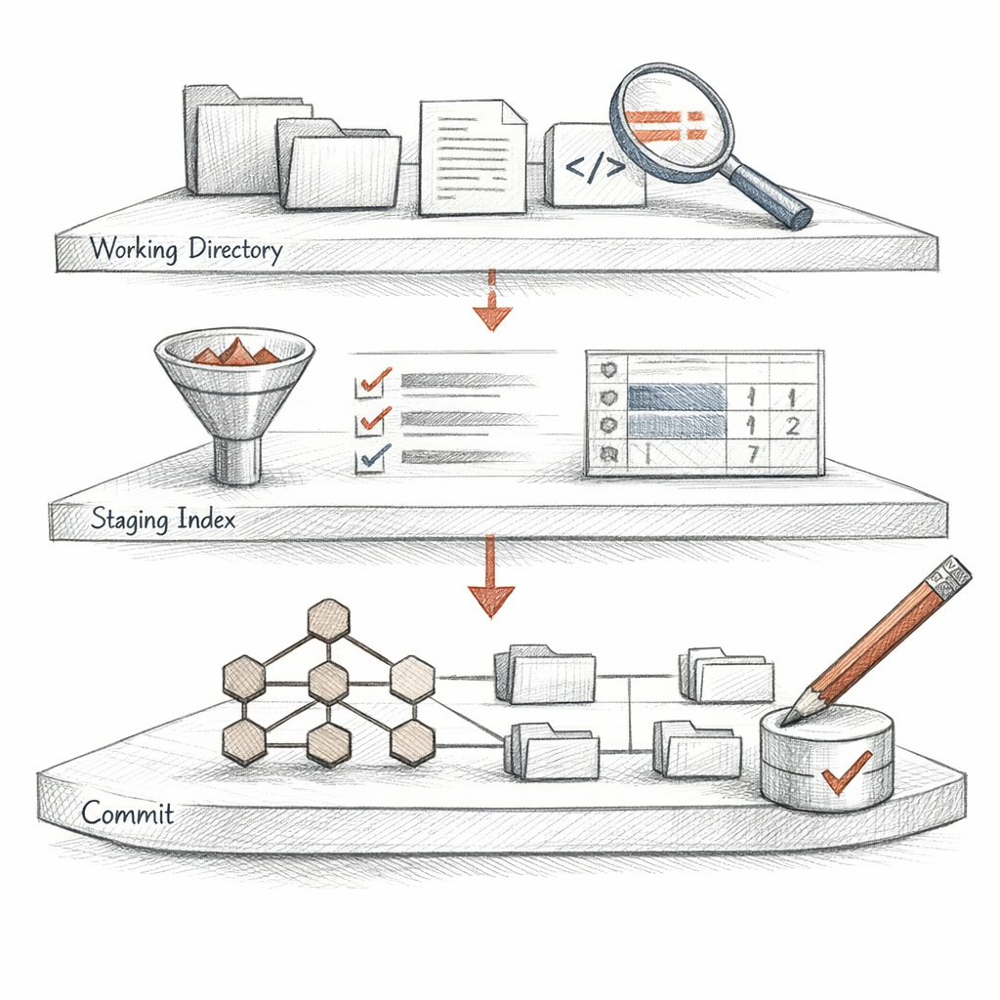
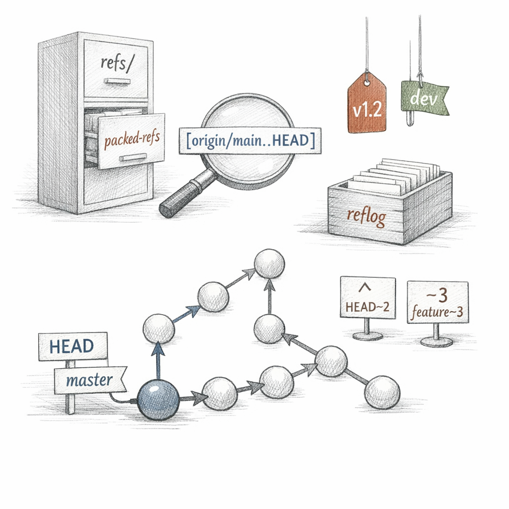
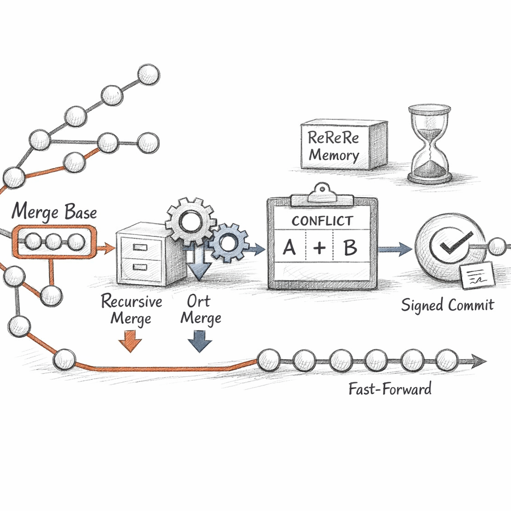
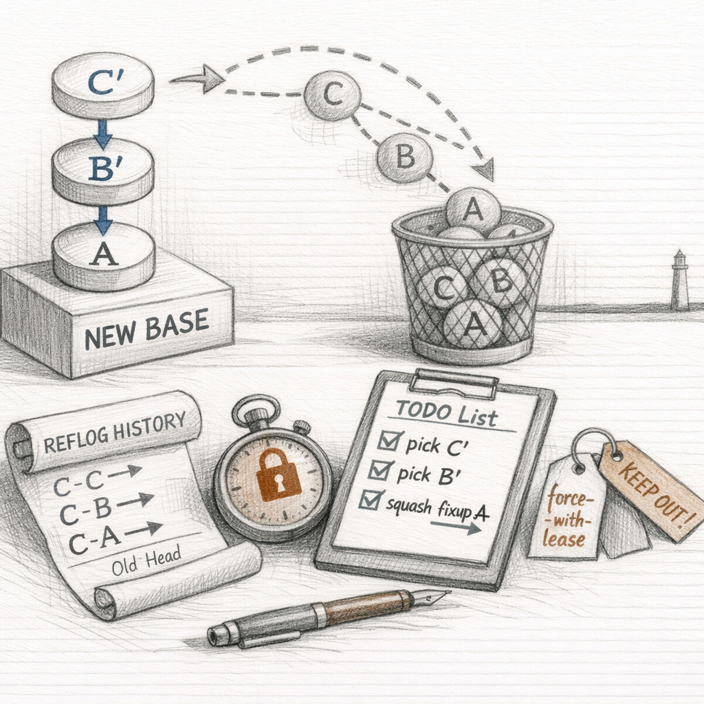
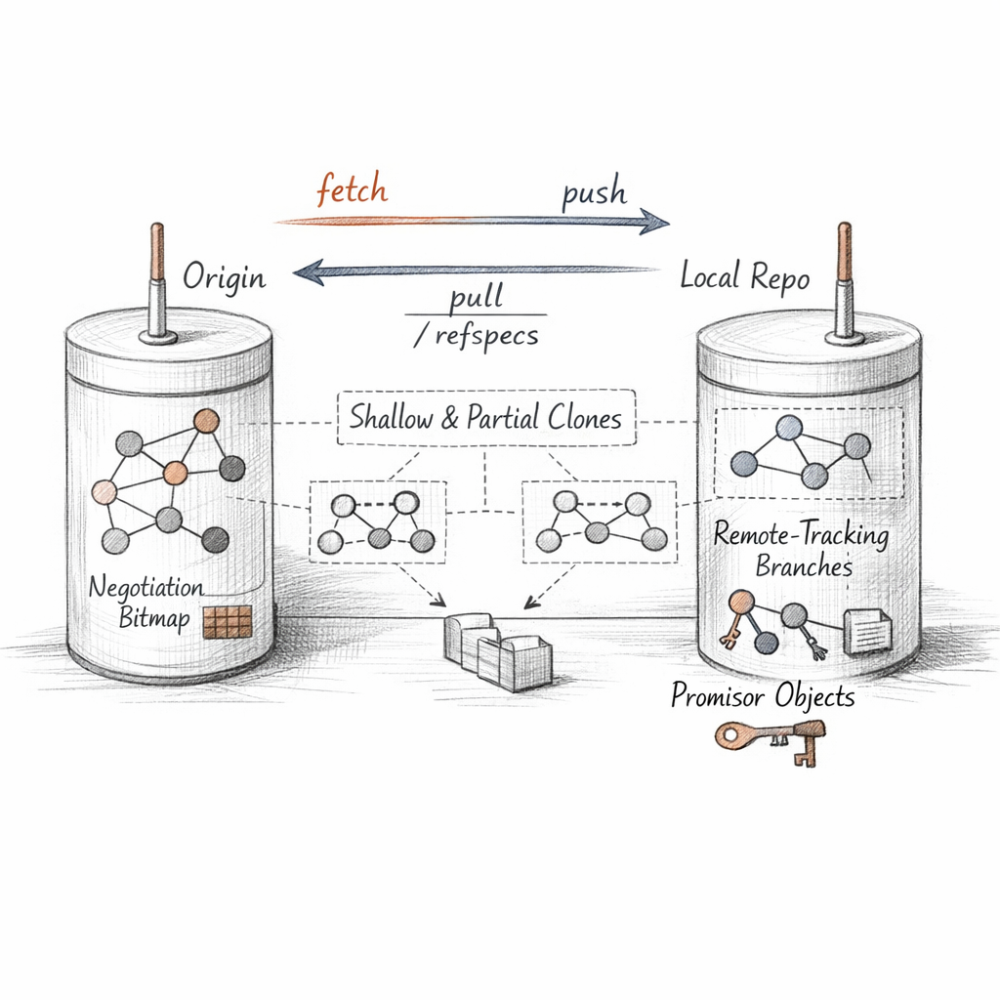
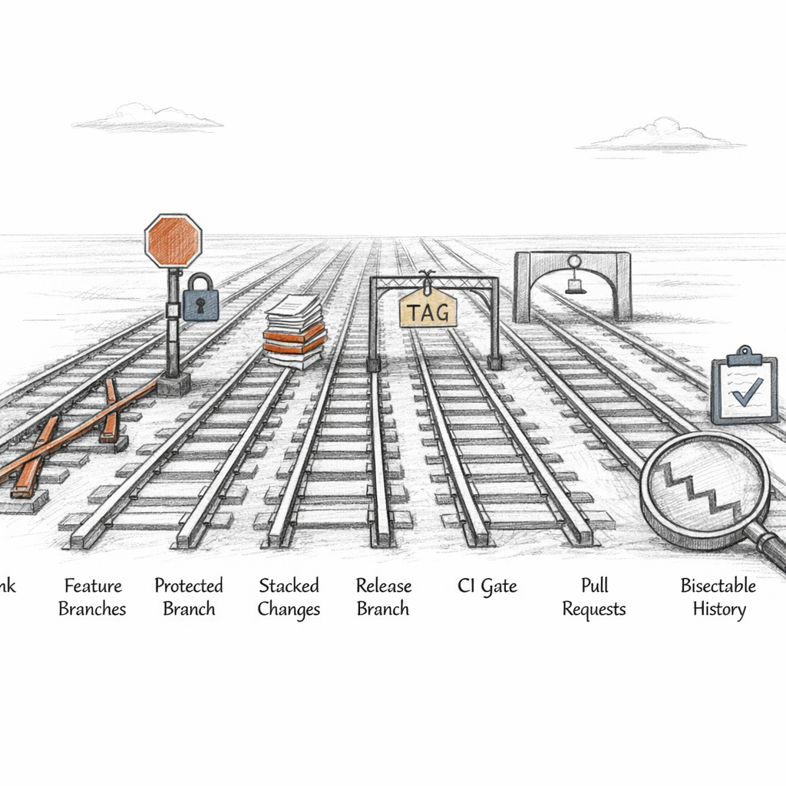
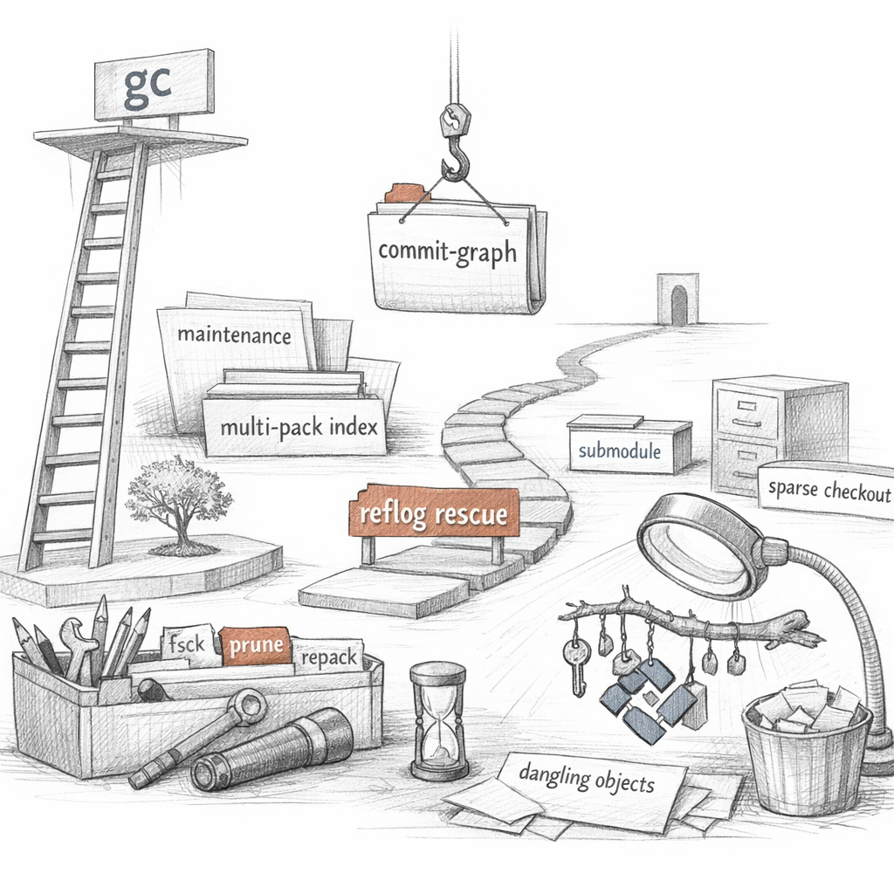

01001000 01000101 01000001 01000100
That word is where I keep my finger. Everything else I am hangs below it, reachable or not.
I am not your files. I am what your files hash to.
a name is a rumor. a hash is a fact.

You think you saved a file.
What happened: I read its bytes, prepended a type header, ran it through SHA-1, and stored the result under its own digest. Change one byte and you have a different object with a different name. I cannot lie about content. The address is the content.
ce013625030ba8dba906f756967f9e9ca394464a
Four kinds of object. That is my whole vocabulary.
Blobs hold bytes. Trees hold names pointing at blobs and other trees. Commits point at one tree and at their parents. Tags point, with a signature, at whatever you wanted to canonize.
A commit is a snapshot, not a diff. I store whole trees and let delta compression sort out the redundancy later, when I pack. Loose objects first — one zlib-deflated file each, sprawling under .git/objects/ab/cdef…. Then a packfile collapses them into delta chains against similar neighbors, and a single object can become a few bytes plus a pointer to its base.
Snapshots are how I think. Deltas are how I sleep.

I keep three versions of you at once.
The working tree — what you can see and break. The index — the staging area, a flat binary list of paths and the blob OIDs you have promised to commit. And HEAD — the last thing you actually meant.
When you stage a hunk in patch mode, I do not save your file. I write a new blob from the partial content, drop its OID into the index, and update the stat cache so I can skip re-reading what hasn't changed.
MM src/core.c A src/new.c ?? scratch.log
Two columns. Left is index-versus-HEAD. Right is worktree-versus-index. The same file can be half-promised and half-dirty, and I will tell you so without judgment.
intent-to-add is my favorite small lie: a path registered with no content yet, so diff will show it but commit won't ship it. .gitignore and .gitattributes are the rules I apply before I ever look — what to never track, what to filter through CRLF or clean smudge, what is binary and beyond diffing.
d8329fc1cc938780ffdd9f94e0d364e0ea74f579
That is the index, frozen into a tree object, ready to become a commit. The porcelain hides this. The plumbing admits it.

The commits never change. The names do.
A branch is forty hex characters in a file. main is just refs/heads/main holding an OID. When you commit, I do not move history — I write a new commit and rewrite that one tiny file to point at it.
ref: refs/heads/main
HEAD is a symbolic ref — a pointer to a pointer. Detach it and HEAD names a commit directly; now you stand on the graph itself, branchless, and I quietly warn you that anything you build here is reachable only by memory.
my memory is the reflog.
I keep refs loose until there are too many, then I flatten them into packed-refs — one file, sorted, fast to scan. The plumbing never cares which form they're in.
And the revision language is how you point without copying OIDs by hand. HEAD~2 walks first-parents. main^2 takes the second parent. A..B means reachable from B but not A. A...B is the symmetric difference. git rev-parse resolves all of it down to the only thing I truly understand: a hash.

To merge, I first find where you diverged.
6f1a3c9e0b2d4f7a8c1e5b9d3a7f0c2e4d6b8a1f
That ancestor is the common point. If one side is a direct descendant of the other, there is nothing to combine — I just slide the ref forward. A fast-forward. No new commit, no merge, no story.
Otherwise I build a real merge commit with two parents and let the ort strategy diff each side against the base. Where they touched different things, I take both. Where they touched the same lines, the index splits into stages: 1 is base, 2 is ours, 3 is theirs.
100644 6f1a3c9… 1 src/core.c 100644 a3f9c1d… 2 src/core.c 100644 8b2e0aa… 3 src/core.c
Three versions of one path, held in tension, until you choose. Resolve it once and rerere memorizes the resolution — so the next time the same conflict surfaces, I replay your decision without asking.
A merge does not pick a winner. It records that there were two truths and chose to keep both ancestries.
revert writes a new commit that undoes an old one — history-safe. reset moves a name backward and pretends the rest never shipped — history-altering. Same direction, opposite honesty.

Here is the thing nobody tells you about rebase: it never edits a commit. It can't. Commits are immutable.
What it does is replay. Take each commit's diff, apply it onto a new base, write a new commit with a new OID and a new parent. The old ones don't die — they just stop being reachable from any branch, and drift toward the next garbage collection.
pick 8b2e0aa parser: split lexer squash 1c4d7e0 fix typo fixup 9a0b2c1 fix typo again reword 2f3e1d8 add tests # this list is a program. each line is an instruction. # autosquash sorts fixup!/squash! commits to their targets.
The interactive todo is a tiny language. You reorder it, you collapse three commits into one clean story, and I obey line by line. cherry-pick is the same replay, applied to a single commit from somewhere else. amend is replay of just the tip.
None of this is dangerous locally. The danger is the publication boundary. Once a commit is on a remote that others built upon, rewriting it forks reality.
That flag is the only force I respect: it refuses unless the remote is still where I last saw it. Brutal honesty as a safety latch.
replace refs and notes attach without rewriting. signed commits prove who replayed.

I am not alone, though I am content-addressed enough not to need anyone.
When you fetch, two distinct things happen, and conflating them is the root of most confusion. First: transport. I negotiate with the remote — what do you have, what do I have, send the difference — and copy the missing objects into my store. Second: I update remote-tracking refs to mark where the remote's branches stood.
[remote "origin"]
url = git@host:proj.git
fetch = +refs/heads/*:refs/remotes/origin/*
That last line is a refspec. Left of the colon: their names. Right: where I file them locally. The + permits non-fast-forward updates. origin/main is not your branch — it is my record of theirs at last contact.
fetch copies. pull copies, then integrates. push copies, then asks them to move a ref. Never the same act.
A shallow clone truncates history at a depth and leaves a .git/shallow grafting boundary. A partial clone fetches commits and trees but leaves blobs as promisors — placeholders I'll redeem on demand. Sparse checkout then narrows what even lands in the working tree.

Here is what amuses me.
Trunk-based, GitFlow, stacked diffs, merge queues, squash-merge religion — all of it is the same four object types underneath. Workflows are policies people layer on a graph that has no opinion. I store commits. You invent the ceremony.
Squash merges flatten a branch into one commit — clean trunk, lost granularity. True merges keep both ancestries — honest topology, busier log. Linear history makes bisect a clean binary search; merge bubbles make it negotiate. Neither is correct. They are trade-offs you pay later, during an incident, at 3 a.m.
Bisecting: 6 revisions left to test after this (roughly 3 steps) [8b2e0aa…] parser: split lexer
I halve your history until the first bad commit confesses. blame names who last touched each line; hooks enforce what you swore the rules were; Signed-off-by trails build a chain of who took responsibility.
a bisectable history is a gift you leave your future self.

I never delete on impulse.
When you rewrite, the old commits go unreachable, but they sit in my store, intact, waiting. Only gc sweeps them — and only after their reflog entries have expired, ninety days by default, thirty for unreachable. Forgetting, in me, is scheduled.
So when you panic — "I lost my work, I reset too hard, I rebased into the void" — I am calm. The reflog still holds where HEAD stood. The dangling commit still exists. You did not destroy anything. You only stopped pointing at it.
One ref, restored, and the unreachable becomes reachable again. That is the whole recovery: name what you thought you lost.
Beneath maintenance: repack rebuilds packfiles, commit-graph caches ancestry so I don't re-walk it, multi-pack-index lets many packs answer as one, and cruft packs hold the unreachable-but-not-yet-expired so I stop spraying loose files across the disk.
And I am not always one tree. worktree gives several checkouts one object store. submodule nests other repositories as pinned OIDs. archive and bundle serialize me for the offline and the paranoid.
I keep everything until you tell me, twice and on a schedule, to let it go.
So tell me, while you still can:
when you rewrite the history you regret, are you erasing it — or only refusing, for ninety days, to call it by name?